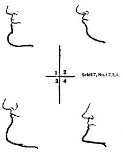

Ara ş t ı rma Serisi No.13
¯¯¯¯¯¯¯¯¯¯¯¯¯¯¯¯¯¯¯¯¯¯¯¯¯¯¯¯¯¯¯¯¯¯
26
Yüz Okuma Sanat ı
¯¯¯¯¯¯¯¯¯¯¯¯¯¯¯¯¯¯¯¯¯¯¯¯¯¯¯¯¯¯¯¯¯¯
Çene

İ leri ç ı km ı ş çene ( Ş ekil 7, No.l) - enerjik ve irade gücü yüksek, serbest, asil, dürüst, inatç ı , sert.
Geriye sarkm ı ş çene ( Ş ekil 7, No.2) - yumu ş ak karakter, ürkek, çekingen, dar ufuklu
Etli çene ( Ş ekil 7, No.3) - ak ı ll ı , hassas, egolu.
Uzun ve sivri çene ( Ş ekil 7, No.4) - etkileyici zeka, alayc ı .
Ba ş
Geriye do ğ ru e ğ ilimli ba ş - kibirli, fazla kuruntulu, kendini be ğ enmi ş . Öne do ğ ru e ğ ilmi ş ba ş - geli ş mi ş zeka
Azac ı k sa ğ a ve ya sola e ğ ilmi ş ba ş - gözleme yetene ğ i güçlü, gözü aç ı k, alayc ı ço ğ u zaman sahtekâr
__________________________________________________________________
© WWW.MAXIMUMBILGI.COM